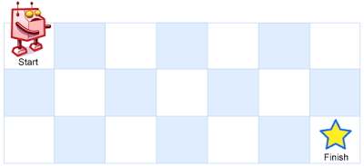

面试题 08.02. 迷路的机器人
DFS 回溯：从 (0,0) 先右后下找一条到右下角的路；确认走不通的格子标记后不再重试。
思路
- 每进一格先标记
dead：向右、向下都失败就把自己从path撤掉回溯；标记保证每个格子只试一次，复杂度才是 O(m·n)。 - 标记是安全的：只能向右/向下走，一个格子到不了终点，换条路来也到不了。
- 递归成功时路径已在
path里（按题面顺序从 (0,0) 到右下角）；整体失败返回空数组。 - 起点或终点本身是障碍，自然返回空。
图解
最优解
1import java.util.*;2 3class Solution {4 public List<List<Integer>> pathWithObstacles(int[][] obstacleGrid) {5 int m = obstacleGrid.length, n = obstacleGrid[0].length;6 boolean[][] dead = new boolean[m][n];7 List<List<Integer>> path = new ArrayList<>();8 // 找到就返回 true，路径留在 path 里9 if (find(obstacleGrid, dead, path, 0, 0)) return path;10 return new ArrayList<>();11 }12 13 // 从 (r,c) 找一条到右下角的路：先右后下；走不通的格子记住，不再重试14 private boolean find(int[][] g, boolean[][] dead, List<List<Integer>> path, int r, int c) {15 int m = g.length, n = g[0].length;16 if (r == m || c == n || g[r][c] == 1 || dead[r][c]) return false;17 dead[r][c] = true;18 path.add(Arrays.asList(r, c));19 if ((r == m - 1 && c == n - 1) || find(g, dead, path, r, c + 1) || find(g, dead, path, r + 1, c)) return true;20 // 两个方向都死：把自己从路径里撤掉（dead 已标记，不会再来第二次）21 path.remove(path.size() - 1);22 return false;23 }24}题目
设想有个机器人坐在一个网格的左上角，网格 r 行 c 列。机器人只能向下或向右移动，但不能走到一些被禁止的网格（有障碍物）。设计一种算法，寻找机器人从左上角移动到右下角的路径。

网格中的障碍物和空位置分别用 1 和 0 来表示。
返回一条可行的路径，路径由经过的网格的行号和列号组成。左上角为 0 行 0 列。如果没有可行的路径，返回空数组。
示例 1：
输入：[[0,0,0],[0,1,0],[0,0,0]] 输出：[[0,0],[0,1],[0,2],[1,2],[2,2]] 解释： 输入中标粗的位置即为输出表示的路径，即 0 行 0 列（左上角） -> 0 行 1 列 -> 0 行 2 列 -> 1 行 2 列 -> 2 行 2 列（右下角）
说明：r 和 c 的值均不超过 100。
题面取自力扣当前版本。
数据快照 2026-11-04。题面版权归力扣所有，本站点仅供本人学习使用，请勿对外发布。